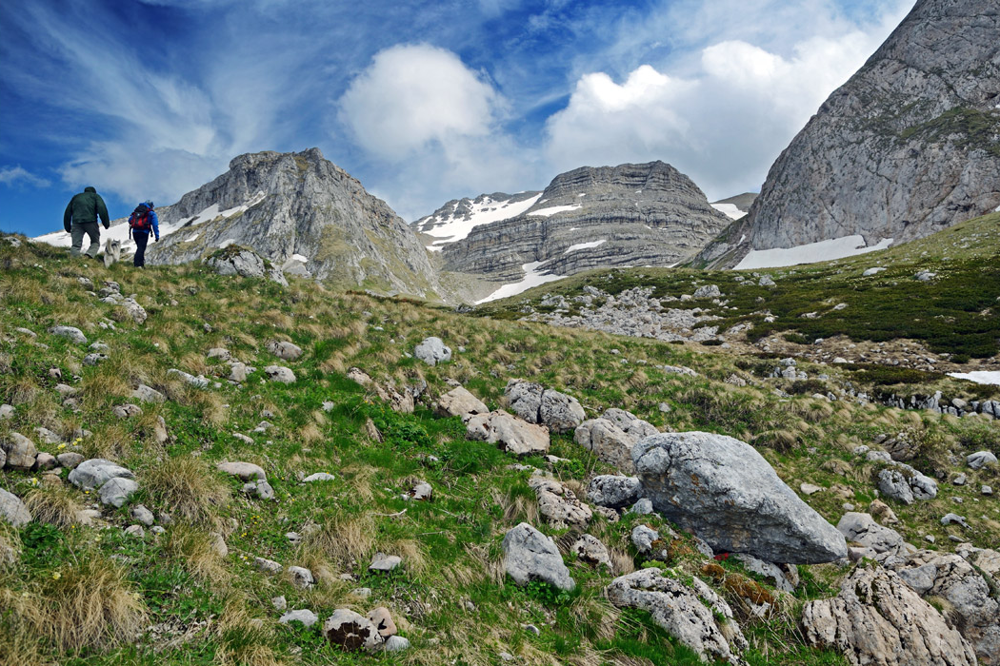

Первые шаги
Ваш уровень подготовки?
Определить свой уровень подготовки важно ещё до выхода на маршрут. В горах Краснодарского края найдётся всё: от лёгкой прогулки к Агурским водопадам до сложных восхождений в районе Красной Поляны. Выберите путь по силам: новичок, любитель, опытный турист или профессионал?
читать далее